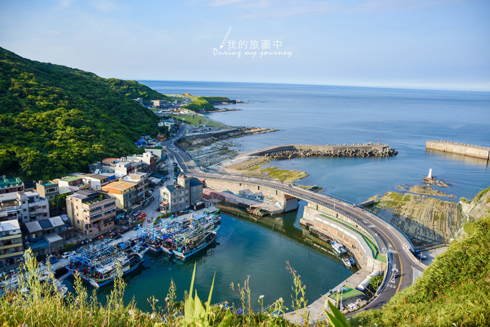

基隆是台灣北部的港口城市，三面環山、一面臨海，以豐富的自然景觀與海洋文化聞名。著名景點包括和平島、基隆嶼和廟口夜市，結合漁港特色、美食及郵輪旅遊，是兼具歷史與現代風情的觀光城市。

這座城市擁有多元的海洋景點，外木山海岸以北海岸最長的自行車道與迷人日落吸引遊客，成為運動與休憩的絕佳地點。潮境公園結合海洋主題雕塑與生態景觀，是親子同遊與觀賞日落的好地方。八斗子漁村則提供新鮮漁產、國立海洋科技博物館及沿海步道，展現獨特的漁村魅力。

而基隆的美食充滿濃厚海洋特色，必嚐廟口夜市的吉古拉與消暑的泡泡冰。八斗子漁港的新鮮漁獲，如烤小卷、生魚片與奶油螃蟹，展現地道漁村風味。無論是夜市小吃還是海鮮料理，都讓人感受到基隆的海洋魅力。

基隆廟口夜市位於奠濟宮前，是一處融合歷史、文化與活力的經典地標。自清朝道光年間起，這裡因廟宇聚集人潮而逐漸形成市集，隨著時代變遷成為熱鬧的夜市。攤販排列兩側，散發濃厚的地方風情。無論是感受熱鬧氛圍，還是探索在地文化，這裡都是不可錯過的旅遊體驗。

基隆的歷史充滿戰略與防禦色彩，清法戰爭期間因地理位置成為激烈戰場。清軍修築了海門天險、白米甕、大武崙等砲台，抵禦法軍入侵，展現重要的防禦地位。今日，這些砲台遺址保存完好，成為探索軍事歷史的絕佳去處，見證它從清朝到日治時期的海洋與軍事發展故事。

基隆的中元祭是台灣最具特色的民俗活動之一，歷史悠久且充滿地方文化。每年農曆七月，居民會製作精美的水燈船，象徵引渡孤魂，祈求平安。儀式後，水燈船被送入海中，隨波而去，既莊嚴又浪漫。這不僅是對傳統的傳承，也是一場結合信仰與藝術的文化盛會。無論是參與儀式還是欣賞壯觀的水燈船，這一天都讓人深刻感受到基隆的熱情與信仰力量。